Zasiłkowy Przewodnik Przyszłego Rodzica
Rodzic odpowiada na kilkanaście pytań i widzi, co mu przysługuje, przez ile dni, w jakiej kwocie i gdzie złożyć wniosek.

Zeskanuj kod i otwórz demo w trakcie prezentacji. Serwis działa na telefonie i na komputerze.
HackNation 2026, wyzwanie ZUS
Uprawnienia wychodzą na jaw po porodzie
ZUS nie zna ciąży przed porodem, więc nikt nie policzy uprawnień wcześniej. Rodzic zbiera je z ustawy, Poradnika ZUS, formularzy i stron pracodawcy.
| Niepewność | wymiar i kwota dopiero z decyzji |
| Korespondencja | braki w dokumentach wydłużają sprawę |
| Spory | część spraw trafia do odwołań |
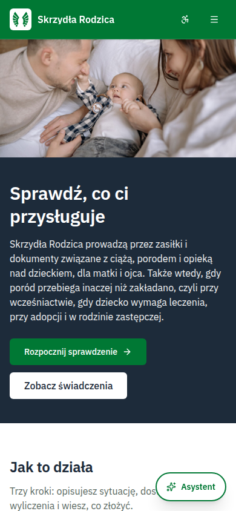
Co dostaje rodzic
Kwota, wymiar i okres wypłaty dla każdego świadczenia, osobno dla obojga rodziców.
| Zasiłek macierzyński | 100% podstawy |
| Urlop rodzicielski | 70% podstawy |
| Wniosek do 21 dni po porodzie | 81,5% za całość |
Karta uprawnień zbiera ten sam wynik na jedną stronę, do wydruku i do pokazania w ZUS.
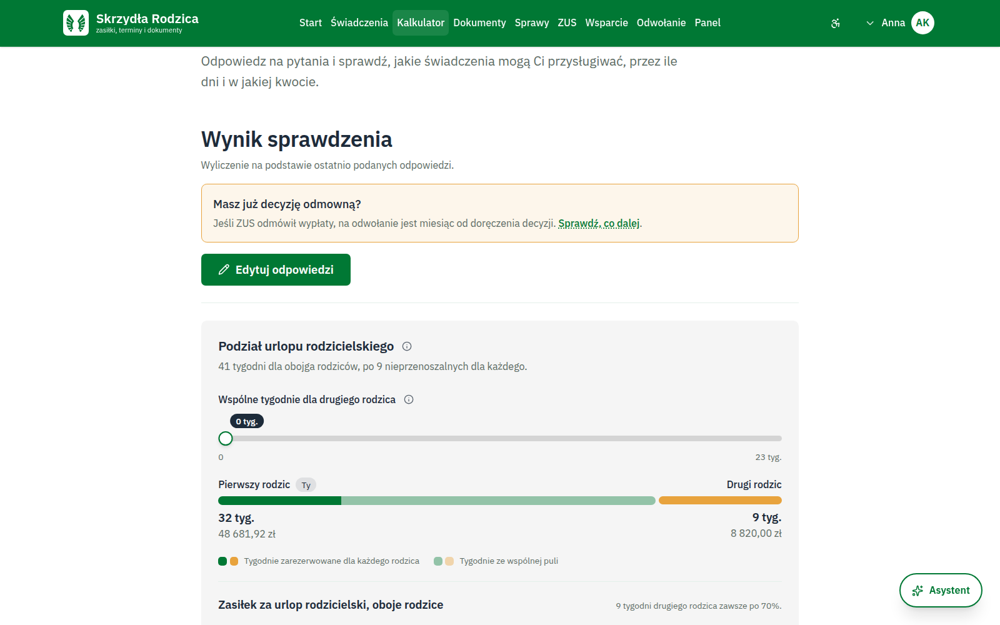
Każda kwota ma odesłanie do przepisu
W pliku RULES.md leży 85 reguł, każda z odesłaniem do ustawy zasiłkowej albo Kodeksu pracy i do materiałów ZUS.
Testy sprawdzają każdą regułę osobno, a te, których nie modelujemy, mają wypisany powód.
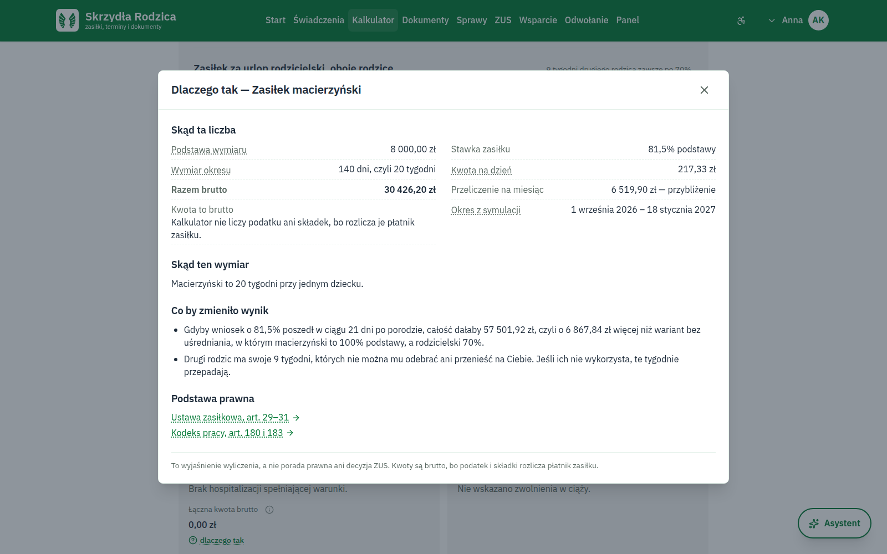
Urlop rodzicielski dzielą oboje
Rodzicielski to jedna wspólna pula. Kalkulator pokazuje, ile tygodni bierze każde z rodziców i ile zostaje na drugie z nich.
| Wspólna pula | 41 albo 43 tygodnie |
| Tygodnie nieprzenoszalne | po 9 dla każdego |
| Łączenie z pracą | wydłuża urlop, zmniejsza zasiłek |
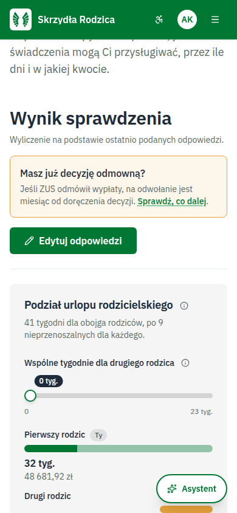
Dokumenty, terminy i miejsce złożenia
Dla każdego świadczenia podajemy formularz, załączniki, termin i adresata, czyli pracodawcę albo ZUS.
| Szkic wniosku | gotowy tekst do wydruku |
| Terminy | plik .ics do kalendarza |
| Karta uprawnień | jedna strona z kwotami |
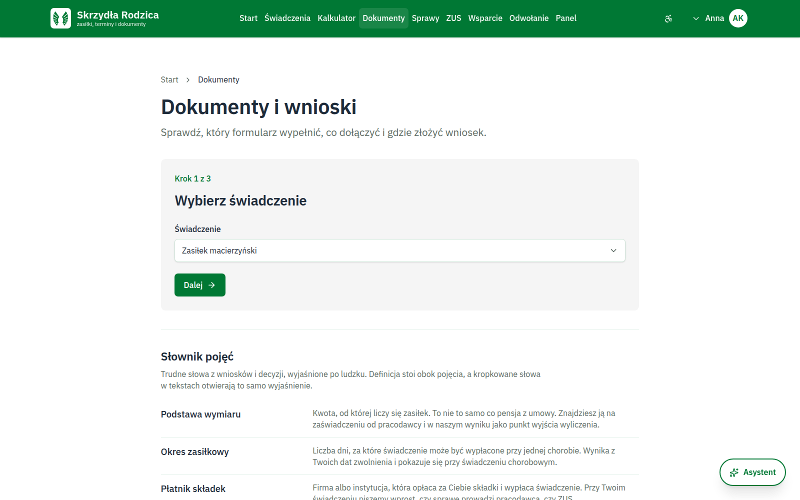
Trudne sprawy też mają swoją ścieżkę
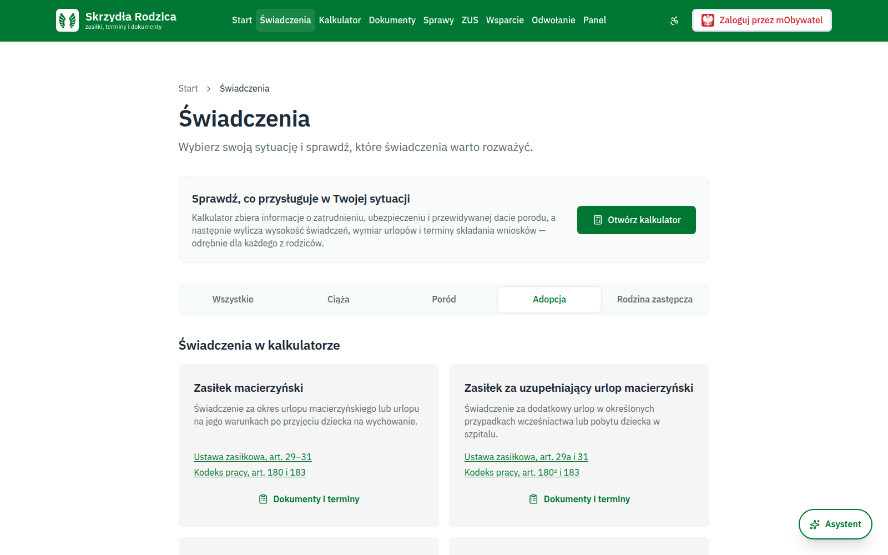
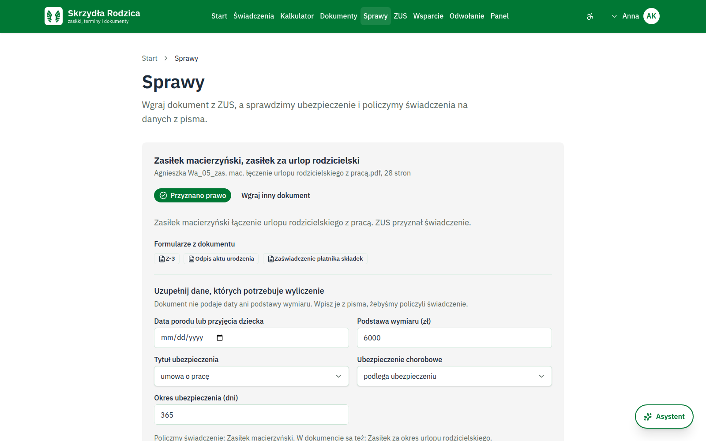
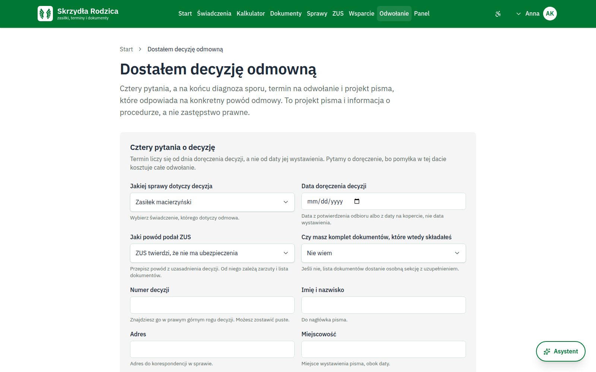
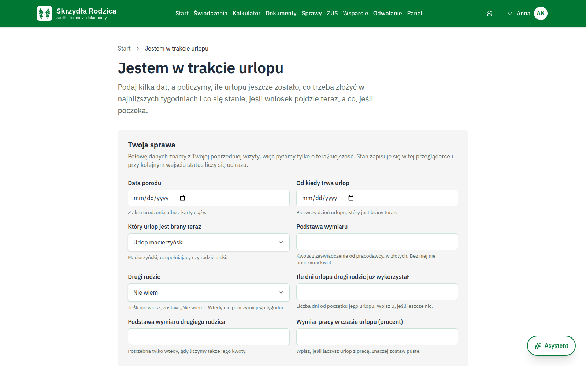
Adopcja, zaświadczenie "Za życiem", odmowa z ZUS i urlop w trakcie mają osobne ekrany. Na stronie Sprawy rozpoznajemy 87 wniosków ZUS po odcisku pliku, a PDF zostaje na urządzeniu.
Ta sama treść na komputerze i na telefonie
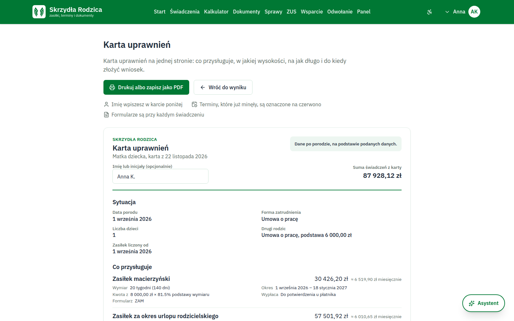
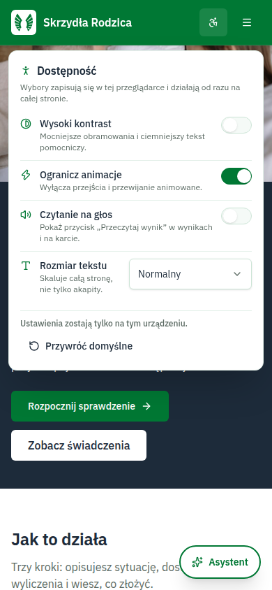
Panel dostępności daje wysoki kontrast, trzy rozmiary tekstu, czytanie na głos i ograniczenie animacji.
Model wskazuje ekran, silnik liczy kwotę
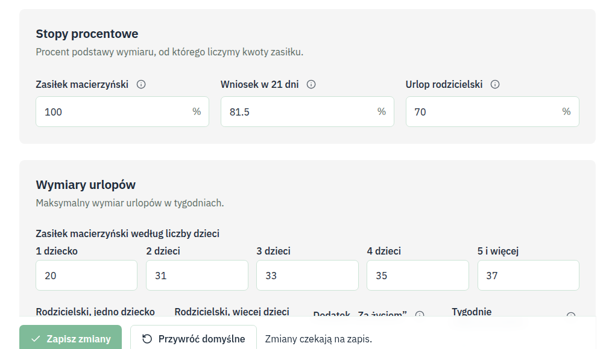
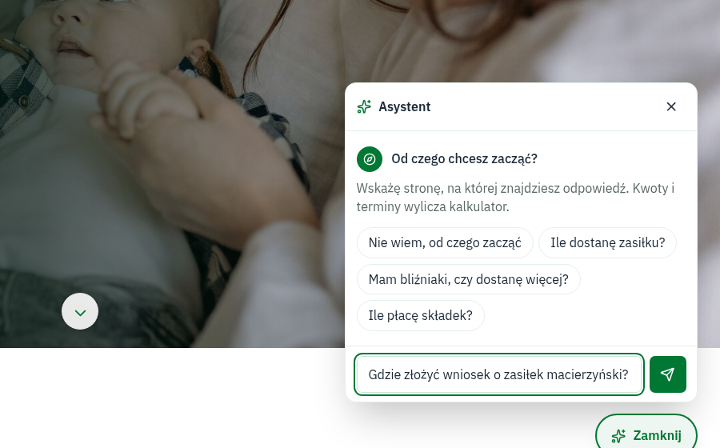
Asystent rozpoznaje pytanie i wskazuje ekran, a kwoty zostają w silniku reguł. Panel administracyjny pozwala zmienić stopy i wymiary bez wdrożenia nowej wersji. Rozwiązania zewnętrzne wskazujemy w CREDITS.md.
Konta ZUS, wnioski i trudne sytuacje
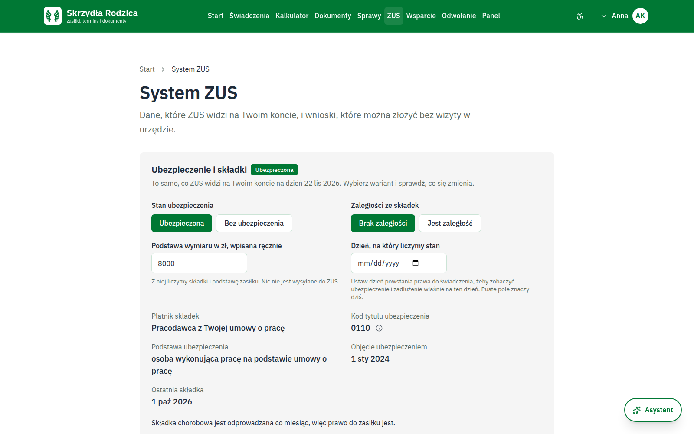
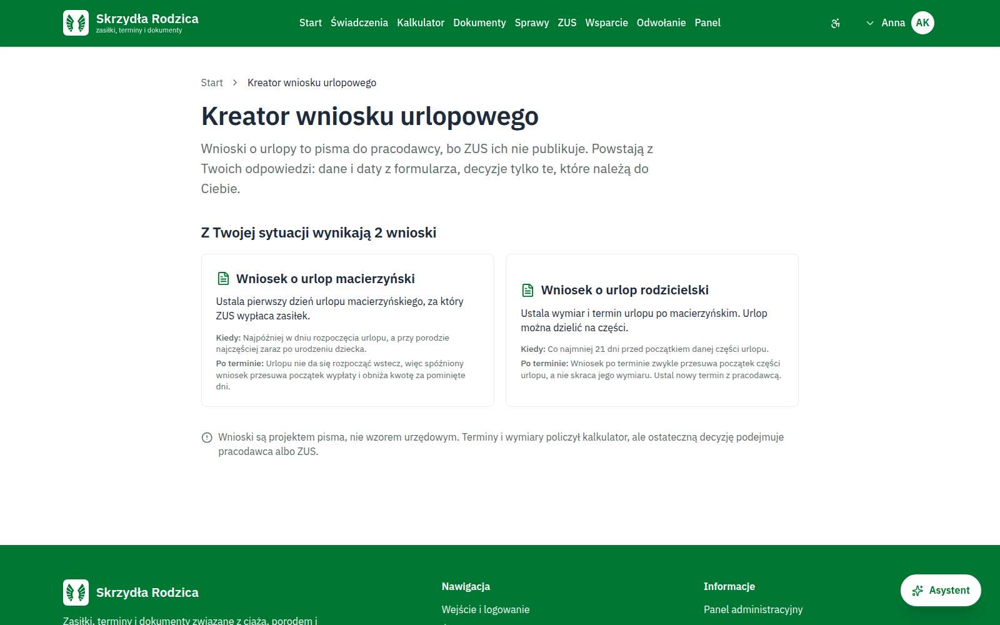
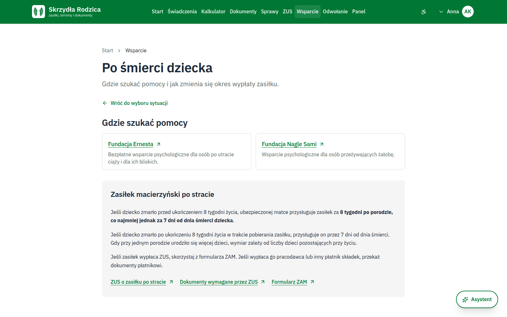
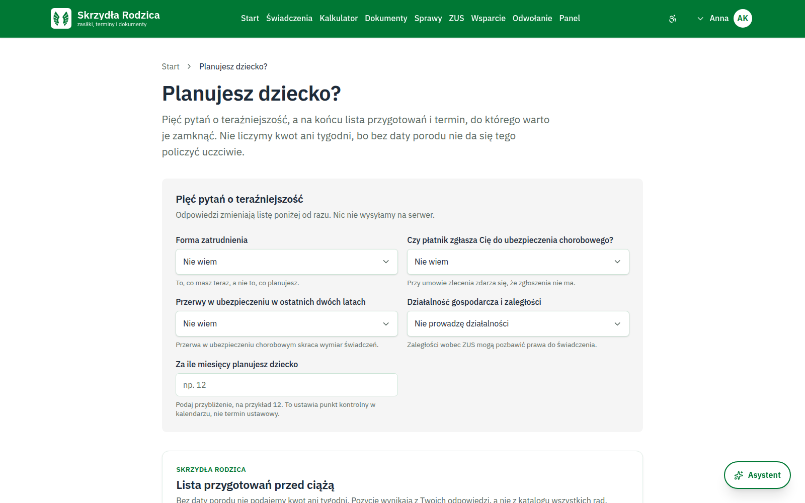
Ubezpieczenie, zadłużenie, e-ZLA, PUE/eZUS i odpis aktu urodzenia to symulacje, więc nic nie wychodzi do systemów ZUS. Wnioski urlopowe powstają z tego, co już jest na ekranie. Demo i film z przejściem przez serwis: skrzydla-rodzica.vercel.app, katalog video/out/ na github.com/Hack-The-Nation-2026/projekt_przewodnik_przyszlego_rodzica.